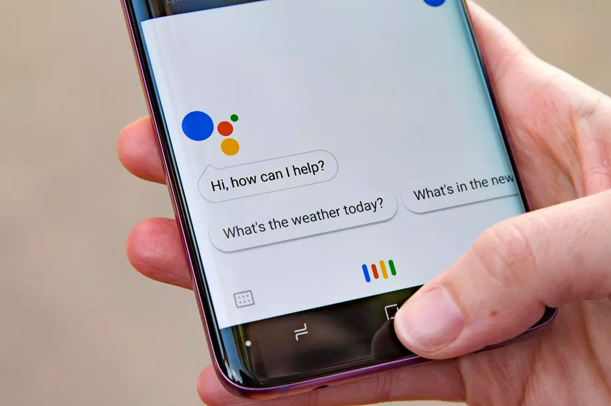

A volunteer-run Covid-19 relief project
Jack of all trades, Master of some
My philosophy towards my work emphasizes a Jack of all trades, Master of some approach. As a Front End Developer, my purview includes working with designers to bring mockups to life, effectively integrating with backend arhitecture, understanding the product strategy, and of course, creating interfaces for the best user experience possible.
While building websites and applications on the client side is my primary focus, I also maintain proficiency with Back End fundamentals, Creative Design tools, and Project Management skills.
Front End

HTML

CSS

Javascript
Sass

AMP

Nunjucks
Back End

Python

Node

Mongo DB
Creative

Sketch

Photoshop
Lightroom
Plan
Clear vision, solid goals
Design
Look, feel, experience
Develop
Elegant, responsive, secure
Web Dev
As a Web Developer I've had the chance to work with diverse clients, from small volunteer community groups to international industry leaders.
When taking on a project, I provide my clients with more than just a robotic output of code in a folder. I give them a partner – a holistic, human approach that considers budget, scope, timeline, audience, and existing assets to deliver the best possible solution, tailored to a client's unique needs.
I build responsive marketing emails and websites for Google clients. Along with HTML and LESS/CSS, my build process utilizes Nunjucks templating, personalized data integration, localization, and accessibility best practices.
Health Worker Housing
At the start of the Covid-19 outbreak, I joined a volunteer initiative to connect healthcare workers with secondary housing to insulate their families from added risk. The site was designed to be simple, easily scalable, and deployed as fast as possible.
Mono Basin Watch
MBW is a community group preserving the natural beauty of Mono Basin, CA. I helped MBW leverage a modest budget to develop a crowd-sourced system of tracking environmentally dangerous activities, supporting county preservation efforts.
Check it out »
Project Management
Before moving into Web Development I spent 4 years as a Project Manager. Although web developement is now my primary focus, I utilize my experience as a PM to support operational cohesion among developers, clients, and other deparments. My approach to project management is centered on three main pillars:
- Support and empower individual team members, arming them with the resources, clarity, and self-efficacy to achieve project deliverables.
- Understand and drive all stakeholder priorities, ensuring project requirements are realized with nothing but the highest quality.
- Identify and act on opportunities for efficiencies, process improvements, and project development, facilitating continuous growth.
With this philosophy, I’ve led digital marketing projects, agency creative work, award ceremonies, fundraisers, multi-faceted volunteer initiatives, and more.

Google Assistant - Boost customer engagement and retention with monthly email newsletters to Google Assistant users worldwide.
The 2017 Human Race - A 6 week fundraising campaign, culminating in a 5 mile run and celebration. $400,000+ raised for 130 nonprofits.

Be the Difference Awards - Recognizing the Top 50 people who do the most to transform Santa Cruz County through volunteerism.
Marketing
Currently I'm at Hawkeye Agency, supporting data-driven B2B and B2C marketing campaigns for products such as the Google Assistant, Chromecast, and Actions on Google. Our award winning CRM program utilizes long-term brand strategies, game-changing creative campaigns, and one-of-a-kind media marketing programs to boost user retention and engagement.
In addition to my current work, I also have experience with email, social, and content marketing. Thoughtful, targeted, strategic marketing practices inform my work to help you reach your audience with the right content, in the right place, at the right time.